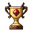
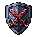
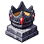
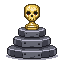
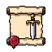

<title>순위·기록 아이콘 후보</title>
<link rel="stylesheet" href="https://fonts.googleapis.com/css2?family=Do+Hyeon&family=IBM+Plex+Sans+KR:wght@400;600&display=swap">
<style>
/* 레이아웃: 홈 화면 모형 2안(실제 UI 그림) + 아이콘 그림 고르기. 게임과 같은 밤 색 한 테마 */
:root {
  color-scheme: dark;
  --page: #120c18; --ink: #ece4f2; --muted: #a99bb5; --line: #2f2439;
  --gold: #ffcf4d; --ruby: #ff4a5e; --panel: rgb(81, 20, 35);
  --game: 'Do Hyeon', 'Malgun Gothic', sans-serif;
  --body: 'IBM Plex Sans KR', system-ui, sans-serif;
}
body { background: var(--page); color: var(--ink); font: 15px/1.65 var(--body); }
main { max-width: 960px; margin: 0 auto; padding-block: 28px 64px; padding-inline: 16px; display: grid; gap: 36px; }
h1, h2, h3 { font-family: var(--game); font-weight: 400; margin: 0; text-wrap: balance; }
h1 { font-size: 30px; } h2 { font-size: 22px; } h3 { font-size: 18px; }
h3 .rec { font-family: var(--body); font-size: 12px; color: #1c1206; background: var(--gold); padding: 2px 6px; border-radius: 4px; margin-left: 6px; vertical-align: 2px; }
p { margin: 0; max-width: 65ch; }
.lede, .note { color: var(--muted); } .note { font-size: 13px; }
section { display: grid; gap: 14px; }
.opts { display: flex; flex-wrap: wrap; gap: 24px; align-items: flex-start; }
.opt { display: grid; gap: 8px; width: 300px; max-width: 100%; }
.opt p { font-size: 14px; }
.phone { position: relative; width: 300px; height: 600px; max-width: 100%; overflow: hidden; border: 2px solid var(--line); border-radius: 18px; background: #0c0716 url(bg_night.png) center top / cover; image-rendering: pixelated; font-family: var(--game); color: #f4ecdc; }
.phone .tower { position: absolute; left: 50%; top: 40px; width: 230px; translate: -50% 0; image-rendering: pixelated; }
.hud { position: absolute; left: 6px; right: 6px; top: 6px; display: flex; justify-content: space-between; font-size: 12px; }
.pill { border: 6px solid transparent; border-image: url(pill.png) 8 fill / 6px stretch; image-rendering: pixelated; padding: 0 3px; display: inline-flex; align-items: center; gap: 3px; position: relative; }
.pill img { width: 16px; height: 16px; }
.pill b { color: var(--gold); font-weight: 400; }
.col { position: absolute; top: 58px; display: flex; flex-direction: column; gap: 6px; z-index: 2; }
.col.left { left: 4px; align-items: center; }
.col.right { right: 4px; align-items: flex-end; }
.ib { position: relative; width: 52px; display: grid; justify-items: center; font-size: 11px; line-height: 1.1; text-shadow: 0 1px 0 #000, 0 0 3px #000; }
.ib img { width: 40px; height: 40px; image-rendering: pixelated; }
.ib b { color: var(--gold); font-weight: 400; font-size: 14px; }
.ib .badge { position: absolute; right: 2px; top: -4px; min-width: 16px; height: 16px; padding: 0 3px; border-radius: 8px; background: var(--ruby); border: 2px solid #000; color: #fff; font-size: 10px; display: grid; place-items: center; }
.ib.summon img { filter: drop-shadow(0 0 4px #c070ffcc); }
.ib.rank img { filter: drop-shadow(0 0 4px #ffcf4daa); }
.dot { position: absolute; right: -8px; top: -8px; min-width: 16px; height: 16px; border-radius: 8px; background: var(--ruby); border: 2px solid #000; color: #fff; font-size: 10px; display: grid; place-items: center; }
.tabs { position: absolute; left: 0; right: 0; bottom: 0; display: flex; gap: 2px; padding: 3px; background: #07030a; }
.tabs span { flex: 1; min-height: 32px; display: grid; place-items: center; font-size: 13px; color: #c9ae9a; border: 8px solid transparent; border-image: url(bar.png) 10 fill / 8px stretch; filter: brightness(.7); }
.sortie { position: absolute; left: 50%; bottom: 52px; translate: -50% 0; width: 190px; height: 44px; display: grid; place-items: center; font-size: 18px; color: #efe3c8; border: 14px solid transparent; border-image: url(button_big.png) 20 fill / 14px stretch; image-rendering: pixelated; }
.icons { display: flex; flex-wrap: wrap; gap: 16px; }
.icon { display: grid; justify-items: center; gap: 4px; width: 120px; text-align: center; font-size: 13px; }
.icon .box { background: #221b29; border: 1px solid var(--line); border-radius: 8px; padding: 8px; }
.icon img { width: 96px; height: 96px; image-rendering: pixelated; display: block; }
.icon small { color: var(--muted); }
.decide { border: 1px solid var(--gold); border-radius: 6px; padding: 14px 16px; display: grid; gap: 8px; }
.decide h2 { color: var(--gold); font-size: 19px; }
ul { margin: 0; padding-left: 20px; display: grid; gap: 4px; }
</style>
<main>
  <header style="display:grid;gap:8px">
    <h1>순위·기록 아이콘 후보</h1>
    <p class="lede">순위를 홈에서 늘 보이게 아이콘으로 옮기고, 아이콘에 내 순위를 숫자로 띄웁니다(예: "3위"). 기록(방어 기록)도 아래 탭에서 빼서 털렸을 때 빨간 배지가 뜨는 아이콘으로 바꿉니다. 그러면 아래 탭은 강화·상점 두 개가 됩니다. 순위 숫자는 홈을 열 때, 공략이 끝났을 때, 2분마다 가볍게 받아 옵니다.</p>
  </header>

  <section>
    <h2>1. 배치</h2>
    <div class="opts">
      <div class="opt">
        <h3>A. 왼쪽 줄: 소환 → 순위 → 기록 <span class="rec">추천</span></h3>
        <div class="phone">
          
          <div class="hud"><span class="pill">1.6k</span><span class="pill">1.7k</span></div>
          <div class="col left">
            <span class="ib summon">소환</span>
            <span class="ib rank"><b>3위</b>순위</span>
            <span class="ib"><span class="badge">2</span>기록</span>
          </div>
          <div class="col right">
            <span class="pill">3/10<i class="dot">3</i></span>
            <span class="ib"><b>+20k</b>방치 보상</span>
          </div>
          <span class="sortie">출정</span>
          <div class="tabs"><span>강화</span><span>상점</span></div>
        </div>
        <p>왼쪽은 "행동"(소환·순위·기록), 오른쪽은 "받기"(패스·방치)로 나뉘어 한눈에 읽힙니다. 순위가 소환 바로 아래라 눈에 잘 띕니다.</p>
      </div>
      <div class="opt">
        <h3>B. 순위는 방치 보상 밑</h3>
        <div class="phone">
          
          <div class="hud"><span class="pill">1.6k</span><span class="pill">1.7k</span></div>
          <div class="col left">
            <span class="ib summon">소환</span>
            <span class="ib"><span class="badge">2</span>기록</span>
          </div>
          <div class="col right">
            <span class="pill">3/10<i class="dot">3</i></span>
            <span class="ib"><b>+20k</b>방치 보상</span>
            <span class="ib rank"><b>3위</b>순위</span>
          </div>
          <span class="sortie">출정</span>
          <div class="tabs"><span>강화</span><span>상점</span></div>
        </div>
        <p>순위가 패스(시즌 보상)와 같은 줄이라 "시즌" 묶음으로 보입니다. 오른쪽 줄이 길어져 탑 오른쪽 위를 조금 더 가립니다.</p>
      </div>
    </div>
  </section>

  <section>
    <h2>2. 순위 아이콘</h2>
    <div class="icons">
      <div class="icon"><div class="box"></div>A. 뿔 트로피 <small>추천 · 한눈에 순위</small></div>
      <div class="icon"><div class="box"></div>B. 검은 왕관 받침대 <small>마왕 왕좌 느낌</small></div>
      <div class="icon"><div class="box"></div>C. 해골 시상대 <small>1·2·3등 단상</small></div>
    </div>
  </section>

  <section>
    <h2>3. 기록 아이콘</h2>
    <div class="icons">
      <div class="icon"><div class="box"></div>A. 금 간 방패 <small>추천 · "털렸다"가 바로 읽힘</small></div>
      <div class="icon"><div class="box"></div>B. 두루마리와 단검 <small>"기록" 느낌</small></div>
    </div>
    <p class="note">기록 배지 숫자 = 지금 복수할 수 있는 침입(실제 플레이어가 이겼고, 24시간 안, 아직 복수 안 함). 복수로 끌어들이는 장치입니다.</p>
  </section>

  <section class="decide">
    <h2>정해 주실 것</h2>
    <ul>
      <li>배치: A 왼쪽 줄(추천) / B 방치 보상 밑</li>
      <li>순위 아이콘: A 트로피(추천) / B 왕관 받침대 / C 해골 시상대</li>
      <li>기록 아이콘: A 방패(추천) / B 두루마리</li>
      <li>아래 탭을 강화·상점 두 개로 줄이기(리그·기록은 아이콘으로)</li>
    </ul>
  </section>
</main>
